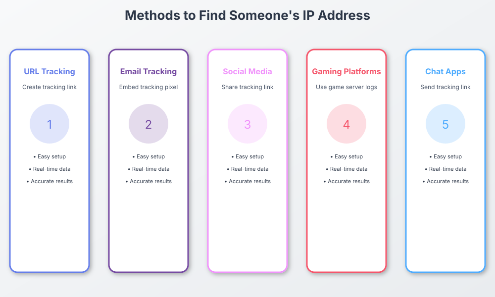

Curious where a click came from? Learn what an IP reveals, the legal limits, and how to track responsibly.
Maybe a friend says they're "abroad," or you're just geeking out about how the internet works. It's normal to feel curious about where a click originates. The key is doing it
responsibly
.
Important:
Respect privacy. Use consent-based analytics and follow local laws. This guide explains what an IP can show—and where to draw the line.
What an IP Address Actually Reveals
IP Tracking Process Flow

Visual representation of methods to find ip address
Interactive Flow Diagram
flowchart TD
A[User Visits Website] --> B[Browser Sends Request]
B --> C[Server Receives Request]
C --> D[Server Logs IP Address]
D --> E[IP Geolocation Lookup]
E --> F[Data Collection]
F --> G[Analytics Processing]
G --> H[Display Results]
style A fill:#667eea,stroke:#764ba2,stroke-width:2px,color:#fff
style H fill:#48bb78,stroke:#38a169,stroke-width:2px,color:#fff
An IP (Internet 协议) address is a network identifier—more like a postcode than a precise street address. Typical insights:
Approximate
region/city
(coarse geolocation)
Internet Service Provider
(ISP)
Connection type
(mobile, broadband, corporate)
It does
not
disclose a person’s exact home address. VPNs and proxies can also mask true location by showing the exit server instead.
Is Finding Someone’s IP Address Legal?
Generally, looking up IP information is lawful when done for
analytics, security, or education
with
notice/consent
and in line with privacy rules (e.g., GDPR/CCPA equivalents). It is
not
okay to use IP data to harass, stalk, dox, or break terms of service.
Legit, Consent-Based Ways to Satisfy Curiosity
Link analytics you control:
Share a link where visitors know analytics are collected; view high-level info like region, ISP, device, and timestamps.
Your site or landing page:
If you operate a site, standard server logs and analytics can show coarse IP insights with proper disclosure.
Classroom & learning:
Demonstrate networks and IPs in a lab setting where all participants agree.
Meet
WhatsTheirIP.tech
— Curiosity, But Keep It Classy
Try WhatsTheirIP. tech
What it does
Creates
consent-based trackable links
for analytics and education.
Disclaimer: This content is for educational/analytic purposes. Always inform participants and comply with applicable privacy laws and platform policies.